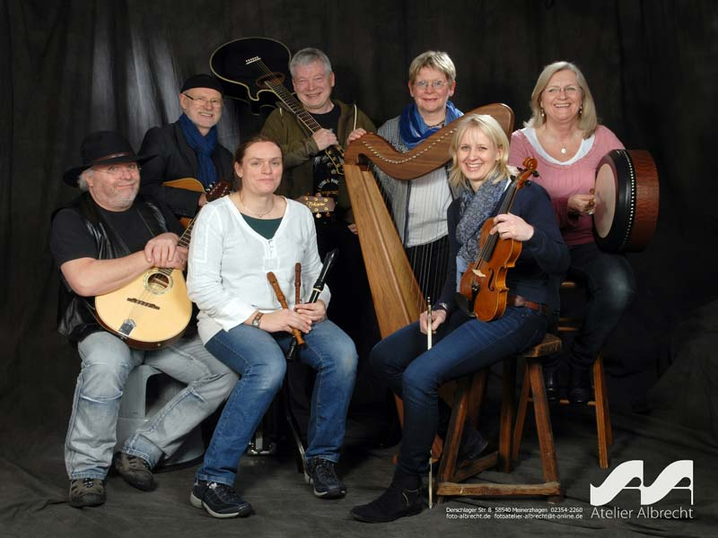

 In 1993 we founded the group Among Friends in Meinerzhagen, Germany. We play Irish music. Thanks to the eight versatile members our repertoire stretches from Carolan’s harp pieces of the baroque period to songs by contemporary writers.
Our Next Performances:
Sonntag, 3. Februar 2019 als Gast bei der »Guten-Abend–Kirche« in Meinerzhagen um 18:00 Uhr (musikalische Gestaltung des Gottesdienstes in der Jesus-Christus-Kirche)
»Irish Folk als Matinée« am Sonntag, 24. Februar 2019 im Heimatmuseum Breckerfeld, Beginn 11:30 Uhr, Eintritt vsl. 10 €.
»Irish Folk am St. Patrick’s Day«, Benefizkonzert zu Gunsten der Schule für Blinde und Sehbehinderte in Olpe am Samstag, 16. März 2019 um 19:30 Uhr in der Förderschule Sehen in Olpe, Bodelschwinghstraße 13, Eintritt vsl. 10 €.
Learn everything about present and past performances on a dedicated page.
Probably not coming, ever:
More content in English. Right now, most parts of the site are not translated and thus all but inaccessible to visitors from overseas. However, our translation efforts are currently stalled. It turns out that just having a static translation doesn’t work for us. We don’t change our site very often, but when we do, we don’t want to spend time translating it ourselves. So the only way we’ll come to ever having an English-language version is if someone steps up and not only offers to do the translations for us, but to maintain them after future changes as well. Alas, that doesn’t seem real likely at this point. Sorry, folks!
We’d also be interested in having a translation in Gaeilge, but obviously English would have to be a priority.
Please contact us if you’d like to participate!